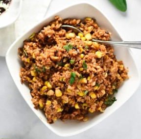

Brown Rice and Corn
Brown rice mixed with a sautee of onions, garlic, green onions, and corn.
Ingredients
2 cups brown rice
4 cups cold water
1/2 teaspoon salt
1 Vidalia onion
3 bunches of green onion
2 tablespoons minced garlic
1 can of corn
Franks Red Hot sauce
Black pepper
Instructions
1. Dice onion and green onion
2. Add water, brown rice, and salt to an oiled pot.
3. Bring brown rice and water to a boil
4. Reduce heat and cover
5. Cook for 20 minutes
6. Sautee diced onion in butter until browned
7. Add green onion and cook for a few minutes
8. Add garlice and cook for a few minutes
9. Add corn, Red Hot sauce and cook on low until rice is done
10. Add suatee to rice
11. Add black pepper